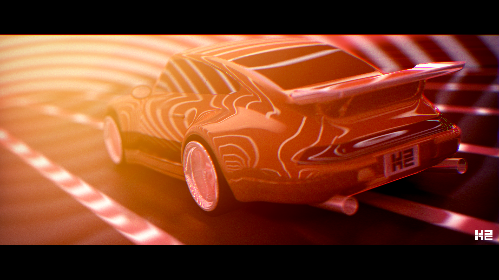
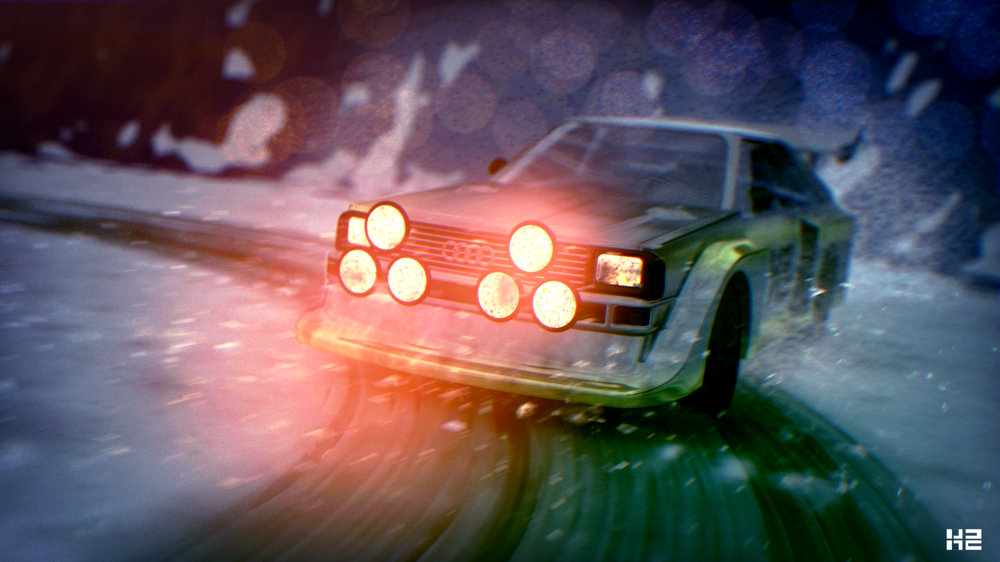
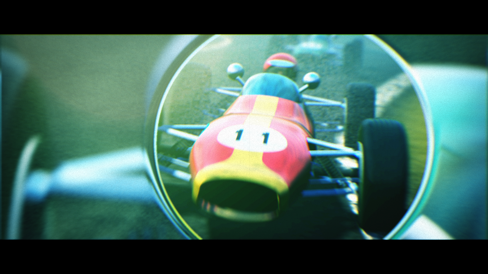
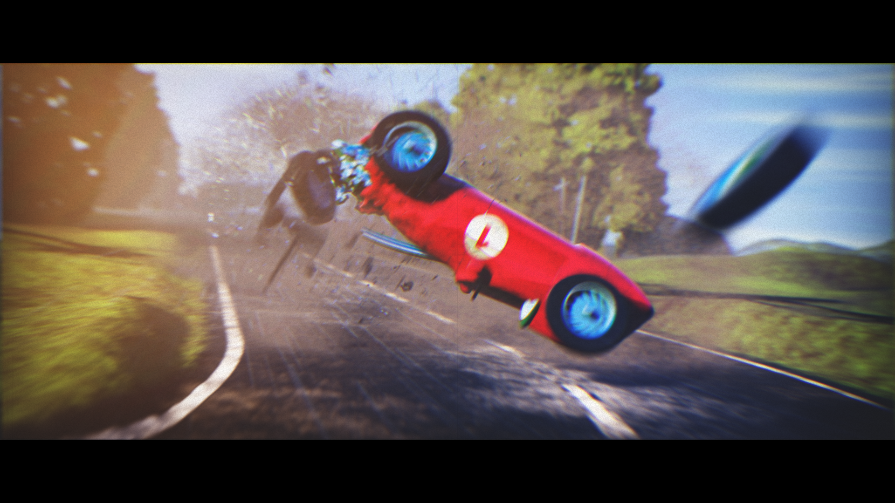
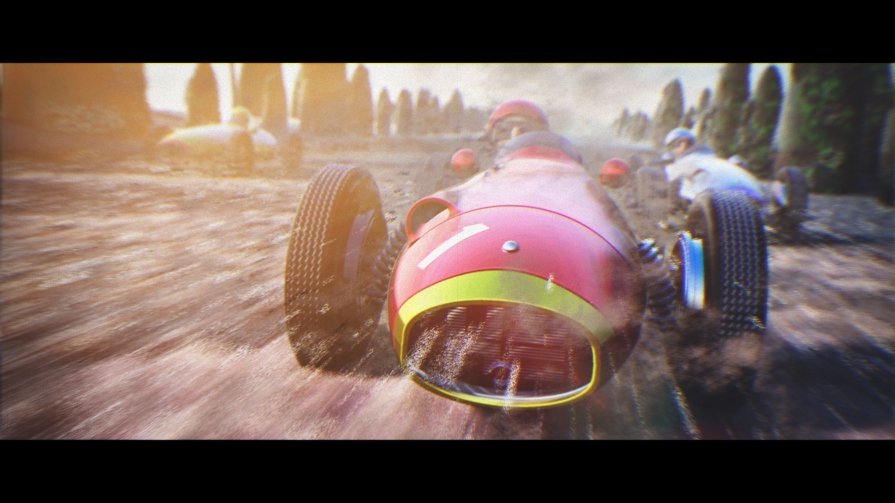

Michal Klos
LinkedIn
GitHub
X
4K EXE GFX — .klos / k2
pouet
·
demozoo
·
k2 group

RAUH-Welt Begriff
4K exe gfx · 2nd at Deadline 2025
Download
pouet
demozoo

Quattro
4K exe gfx · 2nd at Revision 2025 · Meteorics nomination
Download
pouet
demozoo

Fast and Fouriers: Lauda Drift
4K exe gfx · 3rd at Deadline 2023
Download
pouet
demozoo

2Fast2Fouriers
4K exe gfx · 1st at Xenium 2023
Download
pouet
demozoo

Fast and Fouriers
4K exe gfx · 3rd at Revision 2023 · Meteorics nomination
Download
pouet
demozoo
Open Source & Contributions
Pill Engine
— WGPU+Rust rendering core, wasm/WebGPU support
PolyEngine
— rendering contributor. OpenGL 4.3 Forward+ Renderer: PBR, IBL, HDR, dynamic lights, post effects ·
blog
·
slides
stb
— fix to stb_include.h
UEShaderBits-GDC-Pack
— UE4 shader collection
Talks
"Analysing Social Media Signs of Self-Loathing to Support Better Mental Health"
— SAS Explore, Las Vegas 2023
"Low-level GFX for high-level needs"
— Code Europe 2022, on behalf of TikTok
"Shader Livecoding"
—
Warsaw IT Days
2020, 2021, 2022 ·
The H@ck Summit
2020, 2021 · 3000+ total audience
"Dynamic Wounds on Animated Characters in UE4"
— Game Industry Conference 2017
"Rendering of PolyEngine"
— Game Dev Fest 2018, TK Games PWr 2019
Awards
Young Talent Award
— SAS Hackathon 2023. ML service for detecting harmful content, 100+ worldwide entries
Jury Award
— TK Game Jam 2019. Retro-futuristic racer built entirely in Shadertoy in 24h
3rd Place
— TK Game Jam 2017. FPS platformer in 48h
#21 Innovation / #100 Overall
— Ludum Dare 30, ~1600 entries. Multiplayer AR game in 72h
Old Web Demos and Game Jams
0x56
— JS 2.5D shooter inspired by X Wing, game jam winner
In The Night
— JavaScript raycasting engine, Wolf3D-inspired experiment built in 2 days learning JS
Snakube
— Unity3D minimal snake game
Star Warrior
— Unity3D synthwave space fighter,
Ludum Dare 34